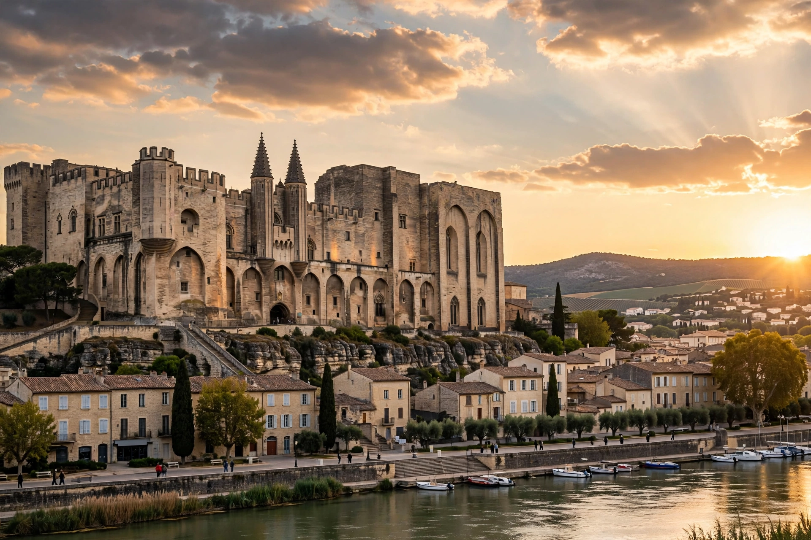

The Avignon Papacy (1309–1377) was the period when seven successive popes resided in Avignon, in present-day France, rather than Rome, under the strong influence of the French monarchy. Petrarch called it the "Babylonian captivity" of the Church.

After conflict between Pope Boniface VIII and King Philip IV of France, Clement V, elected in 1305, settled in Avignon in 1309. His successors — John XXII, Benedict XII, Clement VI, Innocent VI, Urban V, and Gregory XI — built the vast Palais des Papes and a sophisticated, fiscally centralised administration, but were widely seen as subservient to France and corrupt in selling offices and indulgences.
Urged by Catherine of Siena and others, Gregory XI returned the papacy to Rome in 1377 and died there in 1378. The disputed election that followed triggered the Western Schism, with rival popes in Rome and Avignon until 1417.
The period strengthened papal bureaucracy and finance but damaged papal prestige, fuelled reformist criticism, and left Avignon — a papal enclave — in papal hands until the French Revolution.
Western Schism · Palais des Papes · Pope
Recreated from memory.